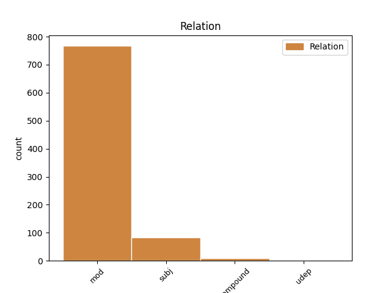
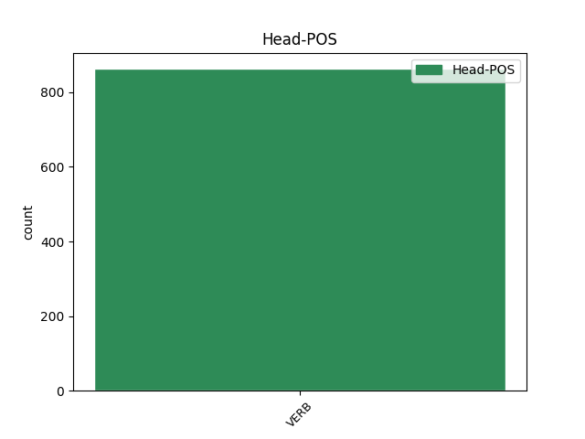
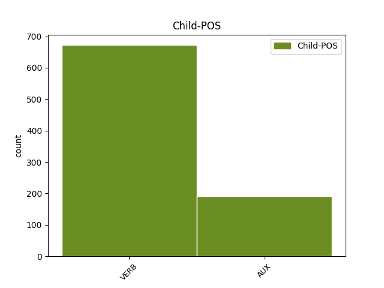

Distribution of features within this leaf



Agreement Rules sorted by frequency.
- When the dependent token is the modifer(mod) of the head token, and the head token is VERB
1 Todo _ _ _ _ 0 _ _ _
2 recuerda recordar VERB VERB Mood=Ind|Number=Sing|Person=3|Tense=Pres|VerbForm=Fin 0 _ _ _
3 aquel _ _ _ _ 0 _ _ _
4 histórico _ _ _ _ 0 _ _ _
5 intercambio _ _ _ _ 0 _ _ _
6 de _ _ _ _ 0 _ _ _
7 corbatas _ _ _ _ 0 _ _ _
8 con _ _ _ _ 0 _ _ _
9 el _ _ _ _ 0 _ _ _
10 dinosaurio _ _ _ _ 0 _ _ _
11 cubano _ _ _ _ 0 _ _ _
12 con _ _ _ _ 0 _ _ _
13 resultados _ _ _ _ 0 _ _ _
14 tan _ _ _ _ 0 _ _ _
15 brillantes _ _ _ _ 0 _ _ _
16 y _ _ _ _ 0 _ _ _
17 espectaculares _ _ _ _ 0 _ _ _
18 : _ _ _ _ 0 _ _ _
19 yo _ _ _ _ 0 _ _ _
20 muevo mover VERB VERB Mood=Ind|Number=Sing|Person=1|Tense=Pres|VerbForm=Fin 2 mod _ _
21 ficha _ _ _ _ 0 _ _ _
22 si _ _ _ _ 0 _ _ _
23 tú _ _ _ _ 0 _ _ _
24 mueves _ _ _ _ 0 _ _ _
25 ficha _ _ _ _ 0 _ _ _
26 . _ _ _ _ 0 _ _ _
1 El _ _ _ _ 0 _ _ _
2 seguro _ _ _ _ 0 _ _ _
3 tiene _ _ _ _ 0 _ _ _
4 carácter _ _ _ _ 0 _ _ _
5 causal _ _ _ _ 0 _ _ _
6 y _ _ _ _ 0 _ _ _
7 mutual _ _ _ _ 0 _ _ _
8 : _ _ _ _ 0 _ _ _
9 las _ _ _ _ 0 _ _ _
10 primas _ _ _ _ 0 _ _ _
11 son _ _ _ _ 0 _ _ _
12 consecuencia _ _ _ _ 0 _ _ _
13 de _ _ _ _ 0 _ _ _
14 distribuir _ _ _ _ 0 _ _ _
15 entre _ _ _ _ 0 _ _ _
16 todos _ _ _ _ 0 _ _ _
17 los _ _ _ _ 0 _ _ _
18 conductores _ _ _ _ 0 _ _ _
19 el _ _ _ _ 0 _ _ _
20 importe _ _ _ _ 0 _ _ _
21 de _ _ _ _ 0 _ _ _
22 la _ _ _ _ 0 _ _ _
23 siniestralidad _ _ _ _ 0 _ _ _
24 que _ _ _ _ 0 _ _ _
25 generan generar VERB VERB Mood=Ind|Number=Plur|Person=3|Tense=Pres|VerbForm=Fin 0 _ _ _
26 quienes _ _ _ _ 0 _ _ _
27 tienen tener VERB VERB Mood=Ind|Number=Plur|Person=3|Tense=Pres|VerbForm=Fin 25 subj _ _
28 siniestros _ _ _ _ 0 _ _ _
29 . _ _ _ _ 0 _ _ _
1 El _ _ _ _ 0 _ _ _
2 texto _ _ _ _ 0 _ _ _
3 indica _ _ _ _ 0 _ _ _
4 que _ _ _ _ 0 _ _ _
5 la _ _ _ _ 0 _ _ _
6 comisión _ _ _ _ 0 _ _ _
7 sobre _ _ _ _ 0 _ _ _
8 el _ _ _ _ 0 _ _ _
9 desarme _ _ _ _ 0 _ _ _
10 " _ _ _ _ 0 _ _ _
11 recurrirá _ _ _ _ 0 _ _ _
12 a _ _ _ _ 0 _ _ _
13 la _ _ _ _ 0 _ _ _
14 cooperación _ _ _ _ 0 _ _ _
15 y _ _ _ _ 0 _ _ _
16 la _ _ _ _ 0 _ _ _
17 competencia _ _ _ _ 0 _ _ _
18 de _ _ _ _ 0 _ _ _
19 la _ _ _ _ 0 _ _ _
20 comisión _ _ _ _ 0 _ _ _
21 especial _ _ _ _ 0 _ _ _
22 ( _ _ _ _ 0 _ _ _
23 la _ _ _ _ 0 _ _ _
24 Unscom _ _ _ _ 0 _ _ _
25 ) _ _ _ _ 0 _ _ _
26 de _ _ _ _ 0 _ _ _
27 la _ _ _ _ 0 _ _ _
28 Agencia _ _ _ _ 0 _ _ _
29 Internacional _ _ _ _ 0 _ _ _
30 de _ _ _ _ 0 _ _ _
31 la _ _ _ _ 0 _ _ _
32 Energía _ _ _ _ 0 _ _ _
33 Atómica _ _ _ _ 0 _ _ _
34 , _ _ _ _ 0 _ _ _
35 del _ _ _ _ 0 _ _ _
36 Secretariado _ _ _ _ 0 _ _ _
37 de _ _ _ _ 0 _ _ _
38 las _ _ _ _ 0 _ _ _
39 Naciones _ _ _ _ 0 _ _ _
40 Unidas _ _ _ _ 0 _ _ _
41 y _ _ _ _ 0 _ _ _
42 de _ _ _ _ 0 _ _ _
43 cualquier _ _ _ _ 0 _ _ _
44 otro _ _ _ _ 0 _ _ _
45 órgano _ _ _ _ 0 _ _ _
46 competente _ _ _ _ 0 _ _ _
47 " _ _ _ _ 0 _ _ _
48 , _ _ _ _ 0 _ _ _
49 medida _ _ _ _ 0 _ _ _
50 que _ _ _ _ 0 _ _ _
51 pone poner VERB VERB Mood=Ind|Number=Sing|Person=3|Tense=Pres|VerbForm=Fin 0 _ _ _
52 en _ _ _ _ 0 _ _ _
53 tela _ _ _ _ 0 _ _ _
54 de _ _ _ _ 0 _ _ _
55 juicio juicio VERB VERB Mood=Ind|Number=Sing|Person=3|Tense=Pres|VerbForm=Fin 51 compound _ _
56 la _ _ _ _ 0 _ _ _
57 preeminencia _ _ _ _ 0 _ _ _
58 de _ _ _ _ 0 _ _ _
59 la _ _ _ _ 0 _ _ _
60 Unscom _ _ _ _ 0 _ _ _
61 y _ _ _ _ 0 _ _ _
62 limita _ _ _ _ 0 _ _ _
63 sus _ _ _ _ 0 _ _ _
64 potestades _ _ _ _ 0 _ _ _
65 . _ _ _ _ 0 _ _ _
Disagree Examples:
1 El _ _ _ _ 0 _ _ _
2 Komercni _ _ _ _ 0 _ _ _
3 Banka _ _ _ _ 0 _ _ _
4 tenía tener VERB VERB Mood=Ind|Number=Sing|Person=3|Tense=Imp|VerbForm=Fin 0 _ _ _
5 una _ _ _ _ 0 _ _ _
6 plantilla _ _ _ _ 0 _ _ _
7 de _ _ _ _ 0 _ _ _
8 13.487 _ _ _ _ 0 _ _ _
9 empleados _ _ _ _ 0 _ _ _
10 a _ _ _ _ 0 _ _ _
11 fines _ _ _ _ 0 _ _ _
12 de _ _ _ _ 0 _ _ _
13 1999 _ _ _ _ 0 _ _ _
14 , _ _ _ _ 0 _ _ _
15 470 _ _ _ _ 0 _ _ _
16 fueron ser AUX AUX Mood=Ind|Number=Plur|Person=3|Tense=Past|VerbForm=Fin 4 mod _ _
17 despedidos _ _ _ _ 0 _ _ _
18 durante _ _ _ _ 0 _ _ _
19 el _ _ _ _ 0 _ _ _
20 primer _ _ _ _ 0 _ _ _
21 trimestre _ _ _ _ 0 _ _ _
22 del _ _ _ _ 0 _ _ _
23 presente _ _ _ _ 0 _ _ _
24 año _ _ _ _ 0 _ _ _
25 y _ _ _ _ 0 _ _ _
26 otros _ _ _ _ 0 _ _ _
27 170 _ _ _ _ 0 _ _ _
28 funcionarios _ _ _ _ 0 _ _ _
29 fueron _ _ _ _ 0 _ _ _
30 trasladados _ _ _ _ 0 _ _ _
31 a _ _ _ _ 0 _ _ _
32 una _ _ _ _ 0 _ _ _
33 filial _ _ _ _ 0 _ _ _
34 . _ _ _ _ 0 _ _ _
1 Hace hacer VERB AUX Mood=Ind|Number=Sing|Person=3|Tense=Pres|VerbForm=Fin 11 mod _ _
2 dos _ _ _ _ 0 _ _ _
3 semanas _ _ _ _ 0 _ _ _
4 , _ _ _ _ 0 _ _ _
5 el _ _ _ _ 0 _ _ _
6 escritor _ _ _ _ 0 _ _ _
7 peruano _ _ _ _ 0 _ _ _
8 Mario _ _ _ _ 0 _ _ _
9 Vargas _ _ _ _ 0 _ _ _
10 Llosa _ _ _ _ 0 _ _ _
11 comentó comentar VERB VERB Mood=Ind|Number=Sing|Person=3|Tense=Past|VerbForm=Fin 0 _ _ _
12 en _ _ _ _ 0 _ _ _
13 México _ _ _ _ 0 _ _ _
14 que _ _ _ _ 0 _ _ _
15 Vicente _ _ _ _ 0 _ _ _
16 Fox _ _ _ _ 0 _ _ _
17 representa _ _ _ _ 0 _ _ _
18 la _ _ _ _ 0 _ _ _
19 única _ _ _ _ 0 _ _ _
20 alternativa _ _ _ _ 0 _ _ _
21 de _ _ _ _ 0 _ _ _
22 oposición _ _ _ _ 0 _ _ _
23 para _ _ _ _ 0 _ _ _
24 poner _ _ _ _ 0 _ _ _
25 fin _ _ _ _ 0 _ _ _
26 a _ _ _ _ 0 _ _ _
27 71 _ _ _ _ 0 _ _ _
28 años _ _ _ _ 0 _ _ _
29 del _ _ _ _ 0 _ _ _
30 PRI _ _ _ _ 0 _ _ _
31 en _ _ _ _ 0 _ _ _
32 el _ _ _ _ 0 _ _ _
33 poder _ _ _ _ 0 _ _ _
34 . _ _ _ _ 0 _ _ _
1 En _ _ _ _ 0 _ _ _
2 este _ _ _ _ 0 _ _ _
3 sentido _ _ _ _ 0 _ _ _
4 , _ _ _ _ 0 _ _ _
5 los _ _ _ _ 0 _ _ _
6 senadores _ _ _ _ 0 _ _ _
7 socialistas _ _ _ _ 0 _ _ _
8 recuerdan _ _ _ _ 0 _ _ _
9 que _ _ _ _ 0 _ _ _
10 ya _ _ _ _ 0 _ _ _
11 hace _ _ _ _ 0 _ _ _
12 un _ _ _ _ 0 _ _ _
13 mes _ _ _ _ 0 _ _ _
14 que _ _ _ _ 0 _ _ _
15 terminaron terminar VERB VERB Mood=Ind|Number=Plur|Person=3|Tense=Past|VerbForm=Fin 0 _ _ _
16 los _ _ _ _ 0 _ _ _
17 plazos _ _ _ _ 0 _ _ _
18 de _ _ _ _ 0 _ _ _
19 alegaciones _ _ _ _ 0 _ _ _
20 públicas _ _ _ _ 0 _ _ _
21 de _ _ _ _ 0 _ _ _
22 los _ _ _ _ 0 _ _ _
23 distintos _ _ _ _ 0 _ _ _
24 trazados _ _ _ _ 0 _ _ _
25 del _ _ _ _ 0 _ _ _
26 futuro _ _ _ _ 0 _ _ _
27 AVE _ _ _ _ 0 _ _ _
28 , _ _ _ _ 0 _ _ _
29 por _ _ _ _ 0 _ _ _
30 lo _ _ _ _ 0 _ _ _
31 que _ _ _ _ 0 _ _ _
32 desean desear VERB VERB Mood=Ind|Number=Plur|Person=3|Tense=Pres|VerbForm=Fin 15 mod _ _
33 saber _ _ _ _ 0 _ _ _
34 si _ _ _ _ 0 _ _ _
35 el _ _ _ _ 0 _ _ _
36 estado _ _ _ _ 0 _ _ _
37 actual _ _ _ _ 0 _ _ _
38 del _ _ _ _ 0 _ _ _
39 proyecto _ _ _ _ 0 _ _ _
40 se _ _ _ _ 0 _ _ _
41 corresponde _ _ _ _ 0 _ _ _
42 con _ _ _ _ 0 _ _ _
43 las _ _ _ _ 0 _ _ _
44 numerosas _ _ _ _ 0 _ _ _
45 manifestaciones _ _ _ _ 0 _ _ _
46 y _ _ _ _ 0 _ _ _
47 promesas _ _ _ _ 0 _ _ _
48 que _ _ _ _ 0 _ _ _
49 el _ _ _ _ 0 _ _ _
50 PP _ _ _ _ 0 _ _ _
51 realizó _ _ _ _ 0 _ _ _
52 durante _ _ _ _ 0 _ _ _
53 la _ _ _ _ 0 _ _ _
54 pasada _ _ _ _ 0 _ _ _
55 campaña _ _ _ _ 0 _ _ _
56 electoral _ _ _ _ 0 _ _ _
57 . _ _ _ _ 0 _ _ _
1 Las _ _ _ _ 0 _ _ _
2 exportaciones _ _ _ _ 0 _ _ _
3 totales _ _ _ _ 0 _ _ _
4 pasaron pasar VERB VERB Mood=Ind|Number=Plur|Person=3|Tense=Past|VerbForm=Fin 0 _ _ _
5 de _ _ _ _ 0 _ _ _
6 los _ _ _ _ 0 _ _ _
7 12,3 _ _ _ _ 0 _ _ _
8 millones _ _ _ _ 0 _ _ _
9 de _ _ _ _ 0 _ _ _
10 dólares _ _ _ _ 0 _ _ _
11 en _ _ _ _ 0 _ _ _
12 1999 _ _ _ _ 0 _ _ _
13 a _ _ _ _ 0 _ _ _
14 los _ _ _ _ 0 _ _ _
15 14,8 _ _ _ _ 0 _ _ _
16 millones _ _ _ _ 0 _ _ _
17 en _ _ _ _ 0 _ _ _
18 el _ _ _ _ 0 _ _ _
19 presente _ _ _ _ 0 _ _ _
20 año _ _ _ _ 0 _ _ _
21 , _ _ _ _ 0 _ _ _
22 lo _ _ _ _ 0 _ _ _
23 que _ _ _ _ 0 _ _ _
24 supone suponer VERB VERB Mood=Ind|Number=Sing|Person=3|Tense=Pres|VerbForm=Fin 4 mod _ _
25 una _ _ _ _ 0 _ _ _
26 subida _ _ _ _ 0 _ _ _
27 del _ _ _ _ 0 _ _ _
28 20,47 _ _ _ _ 0 _ _ _
29 por _ _ _ _ 0 _ _ _
30 ciento _ _ _ _ 0 _ _ _
31 . _ _ _ _ 0 _ _ _
1 Hace hacer VERB AUX Mood=Ind|Number=Sing|Person=3|Tense=Pres|VerbForm=Fin 9 mod _ _
2 dos _ _ _ _ 0 _ _ _
3 semanas _ _ _ _ 0 _ _ _
4 miles _ _ _ _ 0 _ _ _
5 de _ _ _ _ 0 _ _ _
6 profesores _ _ _ _ 0 _ _ _
7 en _ _ _ _ 0 _ _ _
8 huelga _ _ _ _ 0 _ _ _
9 bloquearon bloquear VERB VERB Mood=Ind|Number=Plur|Person=3|Tense=Past|VerbForm=Fin 0 _ _ _
10 la _ _ _ _ 0 _ _ _
11 céntrica _ _ _ _ 0 _ _ _
12 Avenida _ _ _ _ 0 _ _ _
13 Paulista _ _ _ _ 0 _ _ _
14 y _ _ _ _ 0 _ _ _
15 se _ _ _ _ 0 _ _ _
16 enfrentaron _ _ _ _ 0 _ _ _
17 con _ _ _ _ 0 _ _ _
18 piedras _ _ _ _ 0 _ _ _
19 y _ _ _ _ 0 _ _ _
20 palos _ _ _ _ 0 _ _ _
21 a _ _ _ _ 0 _ _ _
22 un _ _ _ _ 0 _ _ _
23 destacamento _ _ _ _ 0 _ _ _
24 de _ _ _ _ 0 _ _ _
25 la _ _ _ _ 0 _ _ _
26 Policía _ _ _ _ 0 _ _ _
27 Militar _ _ _ _ 0 _ _ _
28 que _ _ _ _ 0 _ _ _
29 intentó _ _ _ _ 0 _ _ _
30 desalojar _ _ _ _ 0 _ _ _
31 el _ _ _ _ 0 _ _ _
32 lugar _ _ _ _ 0 _ _ _
33 , _ _ _ _ 0 _ _ _
34 dejando _ _ _ _ 0 _ _ _
35 un _ _ _ _ 0 _ _ _
36 saldo _ _ _ _ 0 _ _ _
37 de _ _ _ _ 0 _ _ _
38 21 _ _ _ _ 0 _ _ _
39 heridos _ _ _ _ 0 _ _ _
40 . _ _ _ _ 0 _ _ _